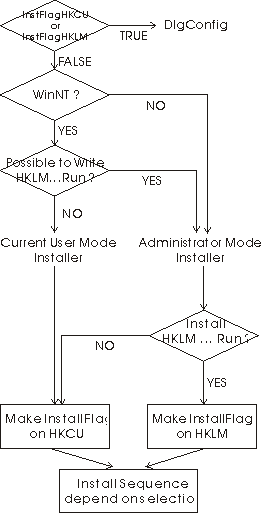

| あとがき・技術資料 |
|
| あとがき・技術資料 |
|
待ち時間を設定した場合に、マウスカーソルが「砂時計付きの矢印」モードになります。これは仕様です。（Sleep
命令を使っているため）
タスクは21個までしか追加できません。
レジストリに格納する全データを暗号化していません。

Mutex を使って実現しています。
sTask 実行中は、"sTaskCtrlMutex" という文字列の Mutex
が確保されています
実行ファイルは下記形式で実行されます
STARTUPINFO si;
PROCESS_INFORMATION pi;
… (中略) …
si.wShowWindow = SW_SHOWNORMAL; // 例：ウインドウスタイルの指定
… (中略) …
::CreateProcess(NULL, [LPCSTR ProgPath], NULL, NULL, FALSE, NORMAL_PRIORITY_CLASS, NULL, [LPCSTR Current Folder], &si, &pi);
::WaitForSingleObject(pi.hProcess, INFINITE); // プログラム終了まで待機
実行ファイル以外は下記形式で実行されます
::ShellExecute(NULL,"OPEN", [LPCSTR ProgPath], [LPCSTR ProgSwitch],"",SW_SHOW);
HKCU\Software\hi_soft
ヘルプファイルの大幅な充実
新規追加に「お勧めタスク、Windowsフォルダ」を追加
レジストリ保存内容を非暗号化
パスワード認証を簡略化
インストーラ、アンインストーラの追加
[BugFix]
アンインストール時にアイコンが消去されない問題を解決
[BugFix]
パスワードがわからなくてもセキュリティー設定ができる問題を解決
バージョン 1.2 （99年7月31日）
[BugFix] Windows95で起動時にシステム停止する問題を解決（MRU管理復活）
[BugFix] Windows95で２回目以降の起動時にシステム停止する問題を解決。また、GDIエラーについても解決（ｲﾒｰｼﾞﾘｽﾄ・ﾊﾝﾄﾞﾗとｱｲｺﾝ・ﾊﾝﾄﾞﾗの開放方法のミスを訂正）
[BugFix] 12月と1月をまたぐnヶ月単位の計算のミスを訂正
[BugFix] マルチユーザーに対応。（レジストリ削除方法をHKEY_USERSからHKEY_CURRENT_USERへ変更）
英語メッセージ版を付属 (sTask_e.exe)
[VerUp] Windows 2000/XP 対応（アンインストーラを対応）
[VerUp] 実行状況のダイアログを別スレッドに
[BugFix] 問い合わせダイアログを最全面に
[VerUp] 英語リソースの結合で、日本語版以外のWindowsで動作が可能
[BugFix]
間にスペースの入るパスを実行できない問題を修正 (spawn → CreateProcess)
[VerUp] 拡張子 CMD も後のタスクを待機させられる
[BugFix]
タスクの追加で最終ステップでの設定が反映されないバグを修正
[VerUp] 直前のタスクと連動機能を拡充
[VerUp] カレントディレクトリ設定の追加
[VerUp] 作業フォルダ設定の追加
[VerUp] ウインドウ状態の追加
[VerUp] 多重起動の防止
[VerUp] 電源状態の追加
[VerUp] HTML help 化
[VerUp] （実質的に無意味だった）お気に入りタスクの削除
[VerUp] アイコンの追加（JScript, VBScript, shell script, other）
[VerUp] パスワードの乱数が初期化されていなかったバグを修正（srand
関数の追加）
[VerUp] ツールバーをフラット・ツールバーに変更
[VerUp] Windows Vista 対応